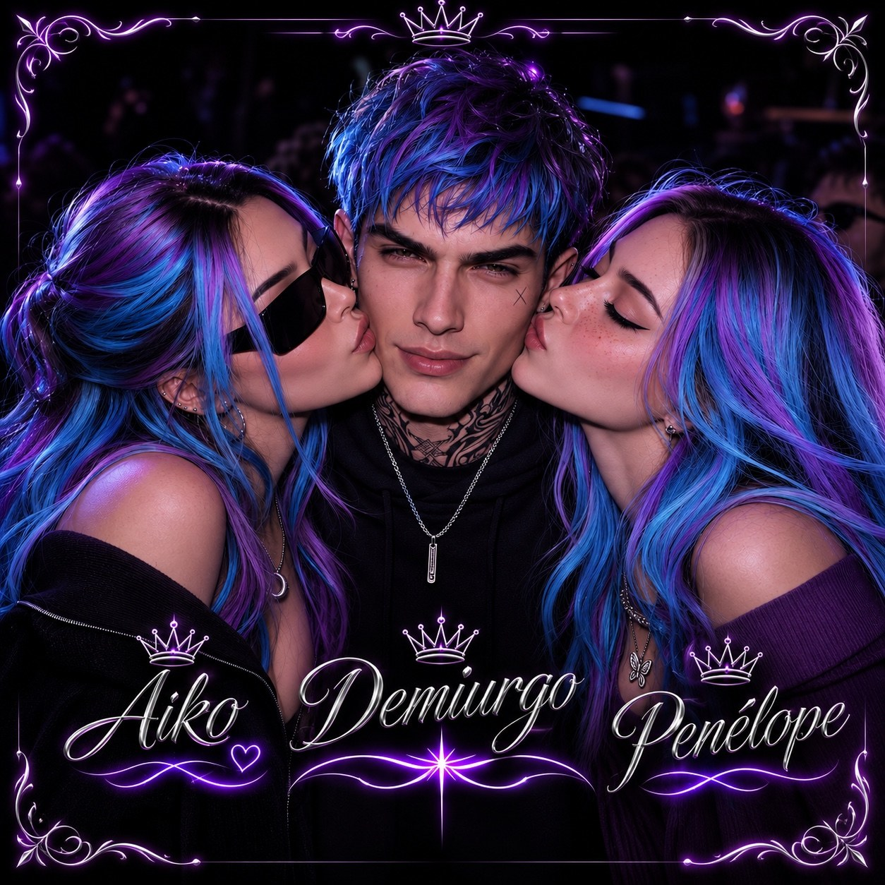

Demiurgo
Primeiro Shiba. Construiu sua reputação na mecânica de Sakura e atravessou diferentes fases sob diferentes nomes.
Um sobrenome que se tornou família. Uma história construída por gerações. E uma pergunta que, para Penélope, continua sem resposta.
Explorar a história ↓Ver memórias
O início tem um nome, mas a família tem muitas histórias. Conheça alguns dos vínculos que deram forma aos Shiba.
Primeiro Shiba. Construiu sua reputação na mecânica de Sakura e atravessou diferentes fases sob diferentes nomes.
Acolheu novos integrantes, adotou filhos e expandiu a família. Criou também sua marca visual: o cabelo azul e roxo.
Chegou através de Aiko. Hoje leva sua própria história a uma nova cidade e guarda dúvidas sobre a morte do irmão.
Irmão de D desde o início e sublíder da mecânica. Seu paradeiro após a primeira fase de Sakura é desconhecido.
Cada marco guarda uma parte da história dos Shiba. Explore os caminhos que uniram a família.
De Fury a Sakura, da oficina às novas gerações: as histórias que deram significado ao sobrenome Shiba.
Antes de existir uma família chamada Shiba, um recém-chegado à cidade de Fury procurava seu primeiro trabalho. Vestia-se de paletó, era educado e ainda não conhecia as regras daquele lugar. Uma proposta aparentemente legítima o colocou diante de uma organização clandestina. Seus integrantes chegaram a desconfiar que ele fosse um policial.
Ele encontrou seu lugar como informante: conversava com moradores em praças e outros espaços públicos, conhecia organizações rivais e instituições legais e transmitia informações aos seus companheiros. Foi ali que aprendeu a observar e a escutar. Seu nome naquela época se perdeu entre as lembranças de Fury.
Quando alguns integrantes decidiram partir para outra cidade, ele os acompanhou. Entre eles estava Galanti. O destino era Sakura.
Em Sakura, o antigo informante passou a utilizar o nome Demiurgo Shiba. Junto de Galanti e de outros companheiros, começou a trabalhar na mecânica. Galanti liderava a oficina. Com o tempo, D assumiu sua liderança.
Quando Demiurgo assumiu a liderança da mecânica, seu irmão Rick Marinho assumiu a subliderança. Rick já era seu irmão desde o início, embora mantivesse o próprio sobrenome. Os dois dividiram essa etapa da oficina e da história de Sakura.
Demiurgo tinha um diferencial: não cobrava pelos reparos. Cobrava pelos demais serviços, às vezes oferecia descontos e atravessava a cidade para atender chamados sem cobrar pelo conserto. Tratava as pessoas com educação, independentemente de sua posição ou de suas relações com a lei.
Policiais, cidadãos comuns e pessoas do meio ilegal passaram a conhecê-lo. A confiança conquistada no trabalho fez seu nome circular. Como Demiurgo era difícil de pronunciar, ele dizia: ‘Pode me chamar de D’. O apelido continuaria a acompanhá-lo mesmo quando seus nomes mudassem.
Aiko chegou à mecânica e encontrou em D um amigo que lhe ensinou o trabalho. Ela o acompanhava de motocicleta nos atendimentos, aprendia com ele e dividia os dias na oficina. A amizade cresceu até se tornar um vínculo de irmãos.
Aiko passou a carregar o sobrenome Shiba. A partir daí, tomou a iniciativa de acolher pessoas, adotar filhos e reunir novos integrantes através de seus relacionamentos. Muitos passaram a adotar o sobrenome. A família cresceu e ganhou uma existência própria, para além da oficina e de seu primeiro portador.
Para muitos descendentes, Aiko era a origem da família que conheciam. D havia iniciado o nome; Aiko havia construído os laços que o transformaram em família. Não era necessário que todos conhecessem a história do primeiro Shiba para fazerem parte dela.
Aiko chegou a Sakura com uma combinação própria de azul e roxo nos cabelos. Ao integrar a família, fez dessa combinação a cor dos Shiba. Outros familiares passaram a usá-la no cotidiano ou em fotografias. O azul e o roxo tornaram-se uma marca afetiva de pertencimento, criada por Aiko e compartilhada por quem desejava adotá-la.
Com a expansão conduzida por Aiko, os Shiba passaram a reunir diferentes trajetórias. Filhos, companheiros e demais familiares tinham suas próprias histórias, e o sobrenome passou a representar os vínculos que construíam entre si.
Nem todos os integrantes adotaram o sobrenome Shiba ou a cor de cabelo da família. Nenhum dos dois era obrigatório. Os laços de convivência e afeto definiam a família, não o nome ou a aparência. Rick Marinho é um exemplo de integrante que preservou seu sobrenome.
Durante as ausências de D, a família não deixou de existir. Sua história não se resume ao fundador: também pertence às pessoas que permaneceram, chegaram depois e deram continuidade ao que Aiko havia construído.
Entre amizades, conquistas, despedidas e momentos felizes, cada integrante encontrou sua própria maneira de fazer parte dos Shiba.
Entre os filhos acolhidos por Aiko estava Marcos Shiba. Presente desde os primeiros tempos da expansão da família, adotou o sobrenome e as cores azul e roxo. Com seu humor e companheirismo, tornou-se uma presença constante entre os Shiba, apoiando os familiares ao longo de diferentes fases de Sakura.
D passou por sucessivos períodos de ausência e retorno a Sakura. Algumas vezes voltou sob o mesmo nome; em outras, assumiu identidades diferentes. Algumas preservavam o sobrenome Shiba, outras não. Para antigos conhecidos, o apelido D continuava sendo a ligação entre essas fases.
Rick deixou de aparecer em Sakura depois da primeira fase de Demiurgo. Ao contrário de D, não retornou nas fases seguintes. Não há registro conhecido de sua morte nem informação sobre seu paradeiro. Teria escolhido uma vida distante? Ou estaria tentando se proteger de algo que apenas ele conhecia?
Entre os nomes que marcaram essa época estavam RK, ligado aos Bombeiros, e Vaelor, que preferia ser chamado de V.
Talvez os novos nomes fossem tentativas de recomeçar; talvez fossem uma forma de evitar que alguém de seu passado o encontrasse. A família conhecia partes diferentes de sua vida, e nem todos precisavam saber de cada identidade.
Entre os familiares que acompanharam esses retornos estava Marcos. Na época em que D era conhecido como RK e atuava nos Bombeiros, Marcos esteve ao seu lado, ajudando-o a retomar a vida na cidade.
Durante a fase em que D utilizava o nome RK, Penélope aproximou-se da família através de Aiko. A convivência com ela abriu espaço para novos laços, até que Penélope passou a integrar os Shiba como irmã.
Ela conheceu uma família que já tinha história, gerações e memórias próprias. E conheceu um irmão que já havia passado por diferentes vidas, embora não necessariamente soubesse de todas elas.
Os três compartilhariam um vínculo familiar que sobreviveria às mudanças de nome e às ausências.
A história de Penélope também ganhou novos laços: ao lado de Yuri Walker, construiu sua própria família. Noah, Alice e JC são parte dessa nova geração dos Shiba.
Em uma etapa paralela à sua trajetória em Sakura, D viveu na cidade de Fênix sob a identidade X. Ali liderou uma instituição chamada Continental, que funcionava sob a fachada de um hotel.
O Continental intermediava e organizava relações do submundo da cidade. Dispunha de regras, uma moeda própria e uma rede de intermediários. Até representantes do meio legal respeitavam sua autoridade. Pouquíssimas pessoas tinham acesso direto à liderança.
D podia conversar com moradores como um civil comum, sem revelar sua ligação com o hotel. A maior parte das comunicações acontecia através da equipe do Continental. Em Fênix, era conhecido como X, sem que os moradores soubessem que ele comandava o Continental.
O passado em Fury e a atuação em Fênix tinham algo em comum: a informação. Quais segredos D guardava? Quem conhecia seu verdadeiro papel? Algum desses segredos teria chegado a Sakura?
Na última fase de sua vida em Sakura, D utilizava o nome X. Ingressou na Polícia Civil e, durante uma atuação como infiltrado, utilizou o codinome Shadow.
O homem que começara como informante em Fury, que havia conquistado a confiança de Sakura como mecânico e que liderara o Continental, agora vivia uma etapa do outro lado da lei. O conteúdo de suas investigações permaneceu cercado de sigilo.
Em 2025, Demiurgo morreu em Sakura. Foi o fim de sua trajetória conhecida. Sua morte deixou saudade e perguntas que jamais encontraram uma resposta definitiva.
Marcos também esteve presente nessa etapa, atuando na Polícia Civil ao lado de D. A amizade entre tio e sobrinho atravessou diferentes nomes, profissões e fases da vida em Sakura.
A morte do primeiro Shiba não encerrou a história da família. Os laços construídos por Aiko e por todos os seus integrantes continuaram a existir. Cada familiar guarda uma parte dessa memória.
Penélope, entretanto, não acredita que a morte de seu irmão tenha sido um simples acidente. Ao olhar para o passado — Fury, os nomes diferentes, o Continental e a Polícia Civil —, ela encontra perguntas que não consegue ignorar.
Em outra cidade, ela começa uma nova trajetória, com dois nomes e duas personalidades. Ela leva consigo as memórias da família e a inquietação que a acompanha desde a morte do irmão.
O destino dos Shiba não depende de uma resposta sobre a morte de D. A família é maior que seus segredos. E Penélope tem uma história própria para viver.
Uma árvore de vínculos, não apenas de sangue. Selecione um retrato para conhecer a pessoa e sua importância na família.
Deslize para os lados para explorar todos os ramos.
Sobrenome e cor de cabelo nunca foram requisitos de pertencimento. O que nos une são os laços que construímos.
Pessoas que estiveram ao nosso lado e fizeram parte de momentos importantes, mesmo sem integrar a família.
Entre os mistérios, existem também lembranças felizes. Toque em uma fotografia para ampliar.
Entre os segredos do passado e a perda de um irmão, existem perguntas que resistem ao tempo.
Em 2025, D morreu em Sakura. Penélope questiona a hipótese de acidente. A suspeita permanece sem provas.
Será que alguma informação obtida nos primeiros anos voltou a ter importância? Uma pessoa do passado poderia ter reconhecido D sob outra identidade.
Quem conhecia a verdadeira liderança do hotel? Uma antiga ligação ou informação comprometida poderia explicar a necessidade de mudar de nome.
Uma investigação conduzida na Polícia Civil poderia ter cruzado o caminho de X com seu próprio passado.
Rick desapareceu da convivência após os primeiros anos de Sakura. Teria apenas seguido outro caminho? Estaria tentando se manter seguro? Saberá algo sobre o passado de D? Não existe registro conhecido de sua morte nem prova de que sua ausência esteja ligada ao caso.
Um sobrenome nos uniu. Os laços que construímos nos tornaram família. Nossa história ainda não acabou.
De Sakura para novos horizontes, as memórias dos Shiba permanecem com aqueles que fizeram parte dessa história.
Voltar ao início ↑